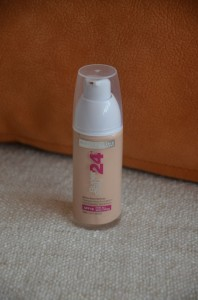

Na mimořádnou spotřebu měsíce března navazujeme i v dubnu :-). A protože rok se opět s rokem sešel, rubriku čeká změna názvu i malá kosmetická bilance… Při jejím přepočítávání jsem si zpočátku myslela, že jsem někde musela udělat chybu, protože má spotřeba některých položek od loňska docela poklesla :-D! Pokud si nějaký výrobek koupím opakovaně, samozřejmě o něm nepíšu dvakrát, což může výsledek trochu zkreslit, ale vhledem k tomu, že v kosmetice jsem až na výjimky holka nevěrná, moc dlouho u jednoho výrobku nikdy nevydržím a potřebuju stále zkoušet něco nového. Jak to tedy se spotřebou dopadlo letos?
- zcela nepřekvapivě 7 kusů mazadel na tělo
- 6 kusů pleťových krémů a 6 krémů na ruce
- 5 kusů pleťových vod a 5 balení odličovacích ubrousků
- 3 kusy sprchových gelů,
- 2 kusy šamponů, 2 odličovače, 2 pleťové masky, 2 make-upy a 2 deodoranty
- 1 opalovací mléko a 1 lak na nehty
Mé předsevzetí ohledně používání přírodní kosmetiky se zcvrklo na dva tři přírodní výrobky, budiž mi ale omluvou, že na složení poslední dobou více myslí i sami výrobci a dá se tak najít celá řada výrobků bez sporných látek. Ale polepšit bych se měla i tak, to jo. A teď už se tedy můžeme vrhnout na kosmetickou spotřebu uplynulého měsíce :-)…
24h make-up Super Stay, Maybelline (odstín 005 Light Beige)
Nákup make-upu, to je vždycky trochu dobrodružství. Ale já jsem nepoučitelná milovnice adrenalinu a místo abych vzala už několikrát ozkoušený kousek, u kterého mám jistotu, že mi sedí, lovím v kosmetických vodách dál :-). Dnes tedy o tomto dlouhotrvajícím make-upu od Maybelline. Začala bych asi pozitivy – jedničku s hvězdičkou dávám za pumpičkové balení, to mě vždycky potěší. Velice dobré jsou i zmatňující vlastnosti make-upu. Přestože je dost tekutý, kryje docela obstojně. Na druhou stranu je potřeba pohrát si s jeho rozmazáváním – má trochu tendenci dělat mapy. Trochu mě mrzí, že nevypadá přirozeněji – prostě je na pleti vidět a všichni vědí, že „jste se tak nenarodila, ale je to Maybelline“, mám-li trochu poopravit jejich proslulý slogan 8-). Nejvíc mi na něm však vadí 2 věci – jednak dost špatná výdrž a pak také oranžový podtón. Po celém dnu v práci už se prostě make-up na mastnějších místech vytrácí. Barva mi prvních pár týdnů přišla dobře sedící, ale po čase buď zoxidoval nebo jsem já vybledla :D. Prostě se u něj začal víc projevovat oranžový podtón, který mi už tolik nesedí, i když to není tak výrazné, abych ho musela přestat používat. Velkým kladem je rozhodně SPF 19 a majitele mastnější pleti by mohla potěšit také absence olejů. Suma sumárum mám tedy z tohoto make-upu dost smíšené pocity a asi už se k němu v budoucnu nevrátím.

Krém na ruce „Aloe vera & olivový olej“, Fin Club
Filosofie Fin Clubu „hlavně do toho navezte co nejvíc lidí a budete to mít levnější“ je mi opravdu protivná a jedna návštěva v tomto obchodě mi bohatě stačila. Krém byl dárkem k objednávce, kterou jsem tam vyzvedávala pro taťku a jeho prodejní cena je (podržte se) 399 Kč za 100 ml. Jakou oukej, věřím tomu, že suroviny opravdu pochází z ekologického zemědělství, ale i tak je to nehorázně předražené. O cenách jejich potravinových doplňků ani nemluvím. Za ty peníze jsem prostě čekala kdovíjaký zázrak. A víte co? Krém za 30 korun z drogérky mi prokáže nesrovnatelně lepší službu. Tohleto totiž vůbec nehydratuje. Možná to hezky voní, možná se to bleskurychle vstřebává a na chvilku to tlapky vyhladí, ale ten efekt je tak krátkodobý, že za chvilku se potřebuju namazat znova. Upřímně by mě zajímalo, jestli někdo tuhletu předraženou kosmetiku skutečně kupuje. Co myslíte vy? Máte s Fin Clubem nějakou zkušenost?
Šampon „Meruňka & Mandle“, Garnier
Šampony Garnier nejsou z mého pohledu žádná velká hitparáda, ale mají moc příjemný design a hezky voní, takže nějakým nedopatřením u mě čas od času vždycky skončí :-). Tento meruňkový je určený pro vlasy se sklonem k vysušování, což ty moje momentálně jsou. Nemyslím si, že by jim v tomto ohledu šampon nějak výrazně pomohl, ale pravdou je, že jakési zlepšení jsem skutečně zpozorovala a pokožku na hlavě už nemám tak vysušenou jako dřív. Dalším jednoznačným plusem je absence parabenů a silikonů. Složení je sice i tak pořád dost chemické, ale za ty peníze to asi lepší být nemůže. Vůně je hodně sladká a strašně mi připomíná meruňkovou aromatickou svíčku od Briese :D. Parfemace je na můj vkus dost výrazná, ale z vlasů pak už cítit není, takže cajk.
Čokoládový krém s univerzálním použitím, Bione Cosmetics
Bione Cosmetics jsem objevila v jedné zapadlé Teta Drogerii a docela mě tato ne příliš profláknutá značka zaujala. BC má poměrně široký sortiment výrobků z oblasti tělové kosmetiky a navíc se jedná o českou značku, což je po všech těch německých Baleách a Cienech docela příjemné osvěžení. Jak je psáno na víčku, jedná se o krém s univerzálním použitím. Zkoušela jsem ho i na obličej, ale protože je velmi silně parfemovaný, využívala jsem ho především jako tělový krém. Složení mi přišlo celkem přírodní, i když nějaký ten silikon se tam také vyskytl. Líbilo se mi také poměrně obsáhlé povídání o obsažených látkách, které si můžete přečíst na krabičce. Co se týče samotných vlastností výrobku, na úvod musím zmínit, že vůně krému je opravdu velmi, velmi pronikavá – skoro až dráždivá. Kakaovo-čokoládové vůně mám v kosmetice obecně ráda, ale tohle už je na mě moc. Když se krém vstřebá, je to lepší než bezprostředně po namazání. Taky se připravte na to, že vám krémem dost načuchne oblečení :D… Jinak ale musím říct, že v ostatních směrech si tento výrobek stál velmi dobře. Překvapila mě jeho konzistence – jedná se o těžce uchopitelnou hmotu (přirovnala bych ji k našlehanému jogurtu), která se velice dobře rozmazává a velmi rychle vsakuje. Výborně zjemní pokožku a opravdu ji vyživí. Po této zkušenosti mám určitě chuť od Bione ještě něco vyzkoušet, i když po čokoládové řadě z důvodu bolehlavové vůně už asi nesáhnu. Poslední maličkost: krabička s šroubovacím víčkem je z velmi tenkého a fórového plastu. Při aplikaci mi to nijak nevadí, ale když to porovnám s takovou Baleou, působí proti tomu krabička Bione dost lacině. Ale jak všichni víme, důležitější je obsah, že :)!
Antiperspirant Pearl&Beauty, Nivea
Přestože Nivea výrobky mám obecně velmi ráda, tento deodorant pro mě byl spíš zklamáním. Ačkoliv jsem ho používala na podzim a v zimě, kdy se nijak zvlášť nepotím, svůj základní úkol na jedničku rozhodně nesplnil. 48 hodinový účinek, který je deklarován na obale, je jeden velký výsměch – pocení zabrání v průměru tak na půl dne, jestli vůbec. Fajn je na něm alespoň to, že se dá bez obav použít i na citlivou pokožku, třeba po depilaci. Vůně je velmi jemná a neutrální. Antiperspirant neobsahuje ani alkohol či barviva. Tak či tak ale nemůžu výrobek pochválit, když nesplní to hlavní, co slibuje na obale.
Štětec na make-up, For your beauty
Upřímně řečeno jsem si původně chtěla pořídit nějaký věhlasnější štětec. Jenže pak jsem stála v Sephoře a moje ještě pořád trochu studentské já se zděsilo, že chtějí za takovýho mrňouska (byť krásně heboučkýho) několik set. Tak jsem se pokorně vrátila do Rossmanna a pořídila tam tento kus s dřevěnou rukojetí za celkovou cenu 80 káčé :D. Je z té „lepší“ řady For your beauty, ale stále je to cenová kategorie, která vás nezruinuje. Navíc jsem si říkala, že mi třeba nanášení make-upu štětcem nebude sedět a ještě se ráda vrátím ke klasické houbičce. Už teď vám ale můžu říct, že houbičku odhazuji v dál  – štětec líčení opravdu povýší na úplně jinou úroveň. I tento má štětinky krásně heboučké, takže nanášení make-upu je příjemné a jednoduché. Samozřejmě je potřeba si s tím trochu vyhrát a zapracování do pleti dá o něco víc práce než v případě houbičky, ale výsledek je podle mě mnohem přirozenější a pleť působí krásně zmatněně. Kvalitou podle mě tento štětec svou cenu převyšuje – za celou dobu z něj neupadl jediný chlup a i rukojeť působí kvalitně a bytelně. Nakonec tedy nelituji, že jsem v Sephoře odolala :-). Máte někdo zkušenost s dražšími štětci? A opravdu jsou o tolik lepší než neznačkové štětce z drogerie?
– štětec líčení opravdu povýší na úplně jinou úroveň. I tento má štětinky krásně heboučké, takže nanášení make-upu je příjemné a jednoduché. Samozřejmě je potřeba si s tím trochu vyhrát a zapracování do pleti dá o něco víc práce než v případě houbičky, ale výsledek je podle mě mnohem přirozenější a pleť působí krásně zmatněně. Kvalitou podle mě tento štětec svou cenu převyšuje – za celou dobu z něj neupadl jediný chlup a i rukojeť působí kvalitně a bytelně. Nakonec tedy nelituji, že jsem v Sephoře odolala :-). Máte někdo zkušenost s dražšími štětci? A opravdu jsou o tolik lepší než neznačkové štětce z drogerie?
Micelární voda 3v1, Lirene
Jedna z nejdiskutovanějších micelárek v kosmetickém světě se jednoho krásného dne usadila i v mé koupelně. A hned na úvod musím říct, že svého nákupu rozhodně nelituji. Její čistící účinky mě přesvědčily – to, co dokáže tahle micelárka vytáhnout z pleti, je prostě neuvěřitelné. Po málokteré pleťové vodě jsem měla pocit tak dokonale vyčištěné pleti. Navíc při odličování nemusíte nijak tlačit, veškeré líčidlo jde snadno a naprosto bez námahy dolů. Odličování očí je taky úplná pohádka – žádné štípání ani slzení se nekoná. Musím říct, že za tu cenu mě tahle micelárka opravdu mile překvapila. Ano, je pravda, že lepí – to je asi ten nejčastější z argumentů proti ní, ale upřímně řečeno, já se po odlíčení stejně vždycky ještě namažu krémem, takže tahle vada na kráse mě zas tak netrápí. Někteří jí vyčítají i parfemaci, ale ta mně osobně taky nijak nevadí. Ubývá na můj vkus poněkud rychle, ale to přičítám tomu, že odličuju tak dlouho, dokud není tamponek pokudmožno úplně čistý. A vzhledem k tomu, že toho tahle micelárka umí vytáhnout z pleti fakt dost, spotřeba se tím trošku navýší… Tak či tak bych si ji neváhala pořídit znovu a určitě bych vám ji doporučila minimálně k vyzkoušení – hodí se pro všechny typy pleti.
Tělové mléko Sensual & Oil, Fa
Jedno tělové mléko od Fa už jsem tu kdysi podrobila zničující kritice a dnes to nebude jiné. Fa stále nevylepšilo svá velmi nepraktická balení, z nichž vám toho vyteče buď zbytečně moc anebo pro změnu nic :D… Nebýt to super výhodný nákup z Rossmanna za 40 kaček, tak se po tomhle výrobku ani neohlídnu. Mléko je určeno pro velmi suchou pokožku a slibuje hydrataci po dobu 48h, ale když se podíváte na jeho řídkou konzistenci, hned vám dojde, že to s tou hydratací moc slavné být nemůže – a taky že jo! Vsakuje se sice rychle, ale o dlouhodobé hydrataci vůbec nemůže být řeč. Ani nasládlá vůně mi příliš nesedla. Ve složení najdete nějaké ty pečující oleje, ale taky parabeny. Našli jste v této recenzi nějaká pozitiva? Já ne, takže propříště zase budu vědět, čemu se v drogerii vyhnout – byť by to bylo za sebelepší peníz 8-)…
Olivový krém na ruce, Isana
Další z řady rossmannovských krémů na ruce s klasickou vůní a klasicky příznivou cenou. Obsahuje olivový olej a kakaové máslo, je bez minerálních olejů i bez silikonů. Vysušené ruce rychle zavlaží, vstřebá se raz dva a nelepí. Jediný problém se tentokrát vyskytnul s balením – víčko se otvíralo strašně ztuha. Osobně si ale myslím, že to byla vada konkrétního kusu, jinak můžu tento výrobek jen doporučit!


{kind=link}
{kind=link}
{kind=link}
{kind=link}
{kind=link}
{kind=link}
{kind=link}
{kind=link}
{kind=link}
{kind=link}
{kind=link}
{kind=link}
{kind=link}